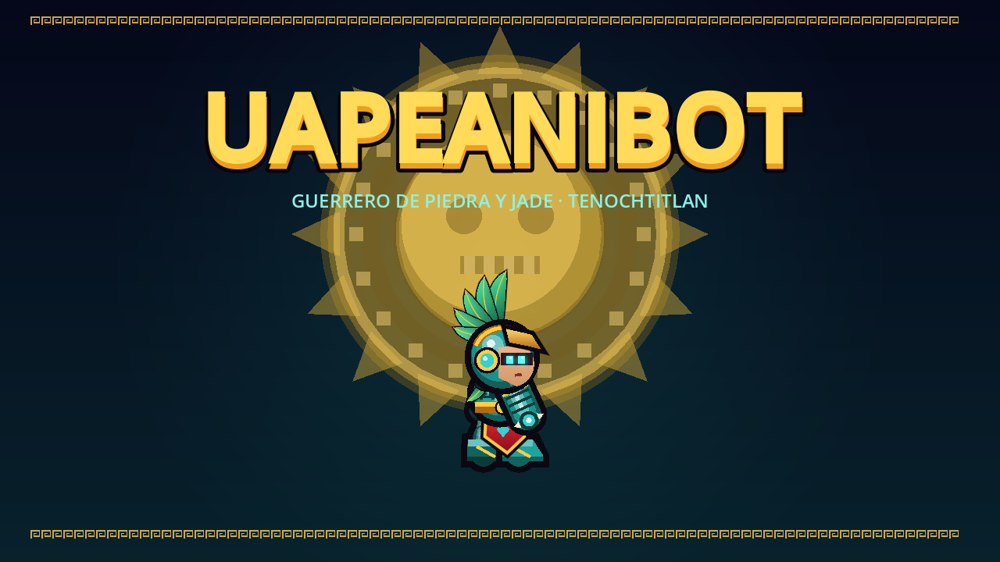

Sin conexión · You are offline
La primera vez UapeaniBot necesita internet para descargarse; después se abre sin conexión.
The first time, UapeaniBot needs the internet to download; after that it opens offline.

La primera vez UapeaniBot necesita internet para descargarse; después se abre sin conexión.
The first time, UapeaniBot needs the internet to download; after that it opens offline.